Optimal Monetary Policy According to HANK
Project
This is our CCA CompEcon replication project based on Acharya, Challe and Dogra, “Optimal Monetary Policy According to HANK”. The goal is to reproduce selected figures from the paper in Julia and to add a small original numerical exercise on household policy and value functions.
- Paper: https://www.aeaweb.org/articles?id=10.1257/aer.20200239
- Replication package: https://doi.org/10.3886/E184261V1
- GitHub repository: https://github.com/LorenzoCastroDeSalvo/final_project_CE
Computational Problem
The computational part is mainly deterministic. For Figures 1 and 2 we solve steady-state equations and simulate the model responses using Julia root-finding and recursions. For the household side, we implement the analytical policy rules from the paper and evaluate the value function on an asset grid using Gauss-Hermite quadrature for the idiosyncratic shock.
In short, the project translates the relevant formulas into a Julia package, checks the main analytical relationships, and produces the replicated figures through a single entry point, run().
Replicated Results
Figure 1
Our Julia replication
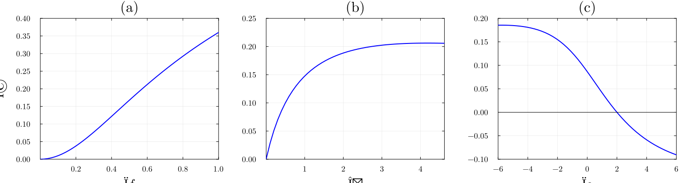
Original paper figure
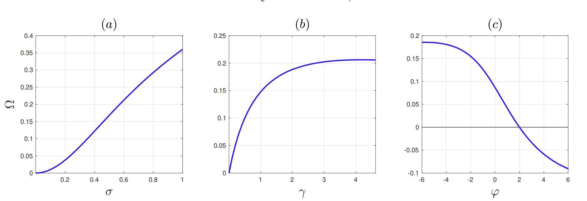
Figure 1 studies the comparative statics of the welfare-relevant policy weight Omega. The Julia code solves the scalar steady-state condition and varies key parameters to reproduce the shape of the paper’s comparative statics.
Figure 2
Our Julia replication
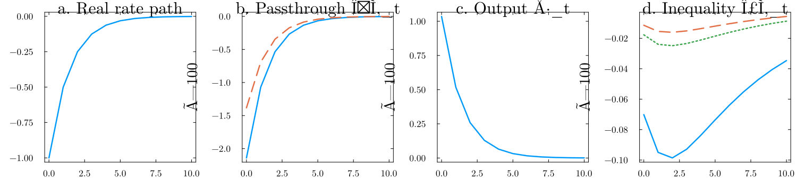
Original paper figure
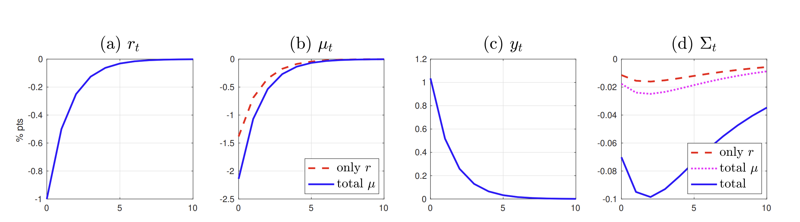
Figure 2 reproduces the model response to a real-rate shock. The implementation computes the steady state, simulates the response path, and decomposes the inequality effect into the channels emphasized in the paper.
Original Value Function Exercise
Besides the replicated figures, we add our own numerical exercise for the household problem. These figures are not present in the paper: they visualize the analytical household policy rules and the value function computed from them.
Consumption Policy over Assets
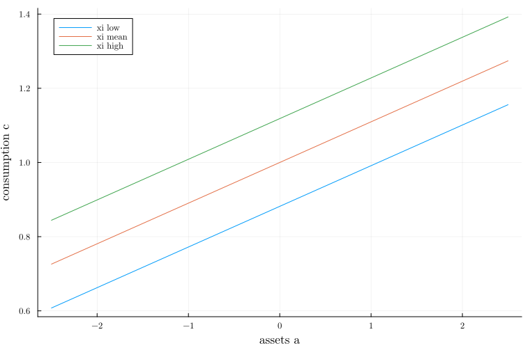
Consumption is increasing and linear in assets, and higher xi shifts the policy upward because it raises cash-on-hand.
Consumption Policy over Cash-on-Hand
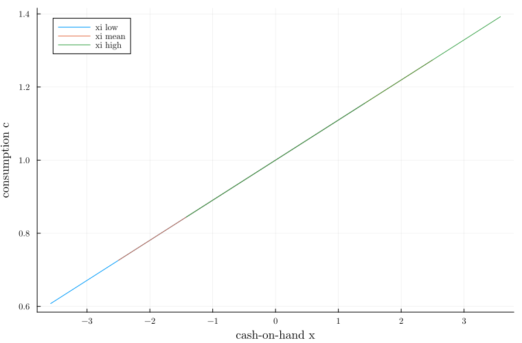
When consumption is plotted against cash-on-hand, the lines collapse. This confirms Proposition 1: consumption depends on assets and xi only through cash-on-hand x.
Labor Policy over Assets
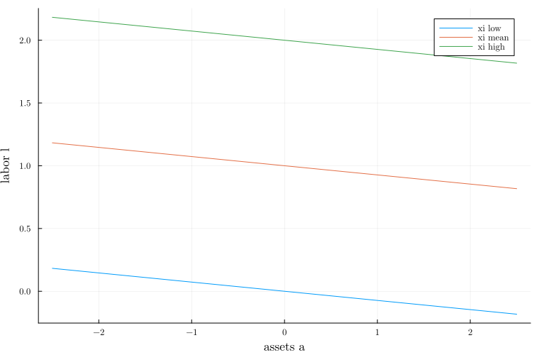
Labor supply decreases with assets because higher wealth raises consumption and reduces the need to work, while higher xi shifts labor upward.
Labor Policy over Cash-on-Hand
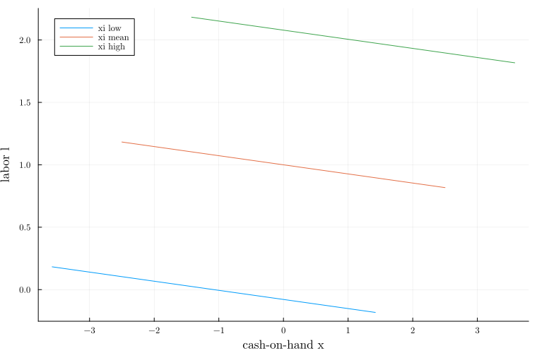
Against cash-on-hand, labor lines do not collapse because labor depends directly on xi as well as indirectly through consumption.
Savings Policy over Assets
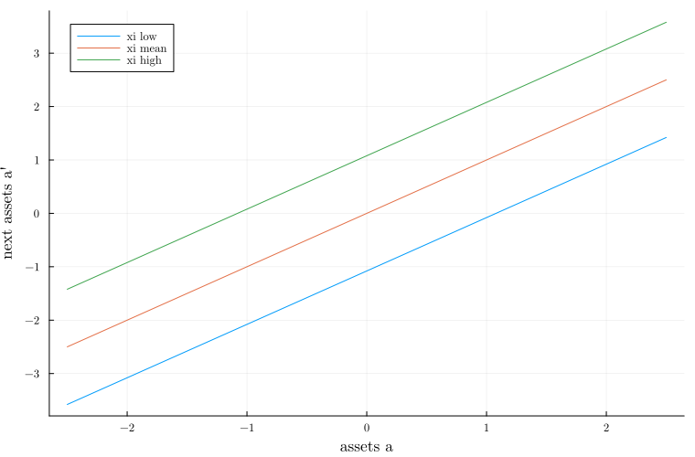
Next-period assets increase with current assets and xi, since higher resources and more favorable labor shocks allow households to save more.
Flow Utility over Assets
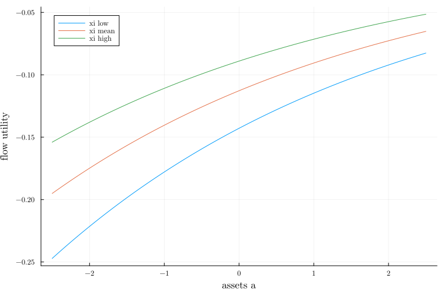
Flow utility increases with assets and with xi: higher assets relax the household budget constraint, while a higher xi makes labor less costly.
Value Function over Assets
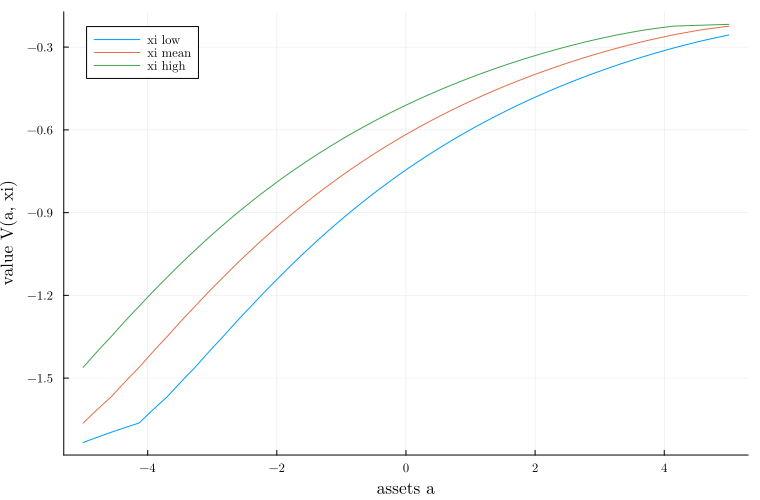
The value function increases with assets and xi because both improve current utility and expected future value; it is computed by policy evaluation under the analytical policy rules.
Julia Package
The repository is organized as a Julia package called HANKPolicies, but the main file we use to reproduce the project outputs is run_all.jl. This script activates the project environment, instantiates the dependencies, creates the figures/ and output/ folders, and then runs the two scripts that generate the results used in the report:
include("scripts/policy_value_plots.jl")
include("scripts/hank-figures.jl")From the repository root, the full project can therefore be reproduced with:
julia --project=. run_all.jlThe tests check that the package loads, the policy formulas satisfy basic analytical restrictions, and the plotting pipeline runs on a small grid.
Conclusion
We reproduce the main selected paper figures in Julia and complement them with an original value-function diagnostic. The project is intentionally compact: the website is meant to show what was replicated, what was added, and how the code can be run.